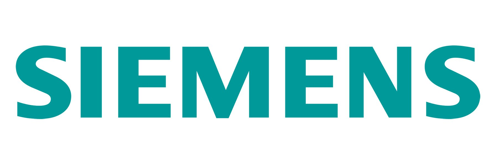

Press
Featured by Reuters as a James Dyson Award finalist, and covered by Dezeen for her innovation work.


London-based product designer and innovation researcher, with a double master's in Innovation Design Engineering from Imperial College London and the Royal College of Art (2025). Her work operates at the intersection of people, science, and design.
Her individual work has received international recognition, including being named a UK James Dyson Award runner-up and global top 20, and being featured by Dezeen and Reuters. Her current venture, Urify, is being incubated at Imperial College London's We Innovate programme — she leads its cross-functional medical and engineering team as solo founder, and has presented it to the NHS and at TEDx.
She's interested in exploring cross-disciplinary collaborations and opportunities to extend the impact of her work — she has also contributed to projects at Huawei and Xiaomi Auto, applying a human-centred design approach to complex product systems.
Featured by Reuters as a James Dyson Award finalist, and covered by Dezeen for her innovation work.

Open to product design roles and collaborations in London and remotely.